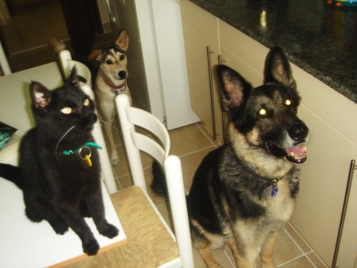

Blogging is my business!
| Home | Photos | Thoughts | Blog | Contact |
|
|
Blogging is my business! |
|
|
|
2006, what a year! Read all about my fascinating 30th year below. You'll be amazed. 31 Dec 2006 Just like to say, on this last day of 2006, I am pregnant. What am I going to do? When did it happen? Who is the father? Is this a dream? These pregnancy kits are renowned for being inaccurate. Aren't they? I know nothing about babies. My only experience of them has been watching Beelee with her 3 kittens. Worst thing is, it could have been any of a dozen fathers. I am such a slapper. I just can't help myself. A few drinks and I'm anybody's. I hope Nero is the father. Please, not the admin assistant.......... What was I thinking of in Skye?????????? 30 Dec 2006 Wow! We saw a King Fisher at the mangrove swamp! It was amazing. Really stunning. At one point it was 15 metres away and you could see the marvelous blues and reds that make up its plummage. I've never been so excited by one of our feathered friends before. Ever. We also saw some huge bats. Seriously, just outside our hotel rooms there were dozens of blood sucking, life threatening bats. Huge hairy things. They brushed against our faces a few times. They sent us shreaking.... I also bought a pregnancy test kit to humour them. Think I'll get one of the pregnant women at work to take it. That'll be a laugh, when it comes back positive. Hahaha. 29 Dec 2006 Having a great time with S&J. Going to Fujiera today. Going to stay overnight. S&J are twitchers, so going to the mangrove swamp in Fujiera to spot some White Collared King Fishers. Strange habit, but they are my guests, so will oblige. Also, they are very confused about what being pregnant is. They keep saying I must be "with bun in the oven". They obviously have been in Orpington too long. I am in control of my life. Nappies, poo and crying? What allure does a baby have for anyone? I can proudly boast I have never touched a baby in my entire life. 28 Dec 2006 S&J arrived safely. Though they seemed a bit dizzy and confused after the flight. They suggested I was pregnant!!? I reprimanded them of course. How could they be so insensitive about my holiday stomach? Not sure what we are going to do today. Just play it by ear. Anymore of their cheek though, and I'll leave them in the desert. 27 Dec 2006 Here are my Boxing Day vids. Please note they may take a while to download but they are well worth the wait! Some long standing fans are coming over to Dubai tonight. S&J are very dedicated. They follow me everywhere. Some would say like a bad smell. 26 Dec 2006 Very quiet Boxing day. The weather has been atrocious here in Dubai. Blizzards!! Made some vids of the family. Will get my film people to knock something together and put them online by tomorrow.... 25 Dec 2006 A white christmas in Dubai! Its a miracle. He does exist! Most importantly, Champagne and Strawberries for breakfast. Delish. Then onto my pressies... For the first time in my life I think I received too many. Honestly I could hardly walk for standing on them. Thankyou all. You have been most generous this year, to a most needy cause. Thankyou. Going to an all-day Christmas bash later on today. Photo of Christmas morn 2006.
24 Dec 2006 Finished wrapping up the rest of my pressies this evening. So exciting. Having a quiet Christmas Eve this year. Very romantic. Just me and me. (and my boys obviously) 23 Dec 2006 The booze is starting to flow.... Had some Guinness last night. My stomach this morning was not a pretty sight. Think I blocked the toilet. Guinness confirms what I have always thought about the Irish though.... It makes you speak a load of sh*t. Also, no wonder all the Irish have beer bellies (inc the women). It is very rich. I think I have put on all the excesses that I had managed to move since the appearence of my holiday stomach on my sojourn to Scandinavia. I am BLOATED. I remind me of Beelee. 22 Dec 2006 It was so cold in Dubai this morning that you could actually see Nero and Ruuskie's breath!! Not sure how cold it has to be for that to happen but this is the first time I've seen it. 3 days to go. I'm almost giving way under the excitement. 21 Dec 2006 Slow down!!!! I've had 12,562 CV's emailed to me already. 20 Dec 2006 How he wept. Today I told the admin assistant that he has only one month to work as an employee of mine. I relished the moment and he cried like a baby! How old is he anyway? 7 months? He will have to fend for himself now and I shall put the feelers out for someone to replace him. Please apply through the contact page if you are Quality (with a capital 'Q'). Some people debate the attributes of 'quality'. If you are one of those people, you need NOT apply. Either you've got it or you aint. If you are looking for a snivelling idiot please get in touch with the admin assistant. Comment by DESERATE FROM NYC :- Oh Ass, I will attend to your every whim and need for no payment. Just let me be in your presence. Comment by GID FROM HAWICK :- I will definitely not be applying for the admin assistant once he is redundant! Please find a good home for him. 16 Dec 2006 Sometimes, unexpectedly, the frailties of life become explicit. Was going to dinner last night, to the Nad al Sheba race course, when the taxi I was in became involved in an accident. Quite horrific. We were going along in one of the fast lanes on Sheikh Zayeed Road when an ambulance, which was traveling in one of the slower lanes, careers off to the central reservation and stops, blocking the lane in front of us. Luckily our taxi driver had his wits about him and hammered on the brakes and manage to not ram into the side of the ambulance. However, as you can imagine, the screeching started behind us and the dreadful thought of a pile up raced across my mind. Miraculously, we were only hit by one van. After our taxi and the other vehicles came to halt it became apparent what had happened. The ambulance had been called to an accident. The driver had obviously been given the general area of where it took place and had only saw the two cars on the central reservation at the last minute. Hence the swerve to get to middle of the motorway. A man (Pakistani, I think) had tried to cross the Sheikh Zaheed Road (all 12 lanes of it) on foot. The car that hit him was a right off. I'd rather not describe the state he was in, needless to say the paramedics did very little to revive him. It was very upsetting. He looked peaceful, though bloodied. There is very little provision for people that don't have a car to get around in Dubai. Even though there are numerous roads that have 6-12 lanes. There are no bridges or subways. From someone sitting in a car these people look crazy as they gamble with their lives. Perhaps they are not gambling. Some say that the poorer in Dubai throw themselves in front of cars to get the insurance money for their families back home. 14 Dec 2006 Just had my first sausage roll of the season. Very nice to get some traditional fair at this time of year. Though I do have many dilema's on many different levels with eating pork. Pig's are so cute. What the hell, it's only once a year!! Talking about pigs! I'm going to dinner tonight with some very big people. Do big people always hang around together? In Arabian Ranches they do. 12 Dec 2006 Can wait to open all my Christmas pressies. I've bought so many lovely things for me already, its so exciting. Importantly, you mustn't refrain from showing all your affection you have towards me. I can accept all the presents you send!! Nero, Pashee and Ruuskii have bought me tonnes of goodies as well. They even wrapped them up in doggy and cat wrapping paper. They are sweet. Admin assistant asked if there was anything he could get me. "Yes" I said. "A clock would be good." I'll give to back to him as a leaving present. Hahaha!! 09 Dec 2006 Bought some clothes yesterday. You know, I don't spend half as much on clothes as I used to. Think my priorities are changing. Though I am still a tomboy. Everything I bought had blue in it. 06 Dec 2006 I am very busy at the moment. Sorting out most things in HSBC. However, I found time for a poem: Fountain In DIC there is a fountain. It must be 54 feet tall. The rays of the morning sun shine through it. Climbing to the top, the water must fall. The spray descends like a lions mane. Pretty, like a zoo exhibit. At 18 feet, the small ones start. In a cirle they all look the same. Wondering why, only not as high. In Dubai they have a program called "Fashion House". Its full intrigue and suspense and the plot is so innovative. Comment by POEMPUBLISHER :- Please get in touch!!! 04 Dec 2006 Only 21 more days to go.... I can hardly wait. Don't send me your pressies till the last minute coz I WILL open them. Oh, just can't help it. 02 Dec 2006 Christmas tree is going up today, yipee! Now where did I put my Christmas CDs? 30 Nov 2006 Goodness. The white fox came back last night and started trying to bonk Nero. Needless to say it ran away whimpering. Nero may be many things but he's definitely not a choofta. Dubai 7's today. 27 Nov 2006 I cannot believe it! This evening one of the rare Arabian White Foxes came into the garden. She was so sleek and agile she left Nero and Ruuski way behind. She was elegant like a swan. Or should I say flamingo. We get flamingos in the lake. Here are the scoop photos 26 Nov 2006 More 12 hour days... I'm just so important at HSBC. 25 Nov 2006 Switched off the AC in the house today. Finally starting to cool down a bit. Just creeping over the 30 C at midday now. 19 Nov 2006 Did I tell you I am blessed? Honestly, I get blessed everyday. The maid blesses me as I leave the house, "God bless" she says. Comment by FATHER PEDRO, ARGENTINA :- The congregation of my pueblo pray for you all de time. We pray for your ass and de safety of your ass. Dios mediante you will come and veeseet us soon. 18 Nov 2006 Went to Fujiera today. Very lovely there. Quite different from Dubai. Beautiful mountains, much like Oman. Took the boys (not Pashee, obvioulsy), they loved it. Ruuskee swam in a tidal river. For some reason he isn't too keen on swimming and only partakes when conditions are suitable. Think the waves breaking in the sea beach scare him. Nero would swim in a pool of sh*t. He loves swimming. Can't get him out once he's in. 15 Nov 2006 When my boys are naughty I just place my hand over them and they calm down. Nero and Ruuski have taken to becoming a bit too boisterous. It starts amicably enough but ends up with Ruuski rugby tackling Nero! Nero ends up on the floor rather disgruntled with Ruuski wagging his tail like crazy. They both forget how old my baby is. Nero is slowing down you know. Also, Mr Nero is going for a haircut today. He'll look spiffing when he comes back from the barbers! 14 Nov 2006 Happy Birthday to the Dog Fox Wolf!!! 12 Nov 2006 Going to put my christmas tree up soon. Christmas is so exciting, don't you find? Going to really treat myself this year. Perhaps buy another Harley. Now the weather is cooling down a little, think its time to get my leathers on! Steady boys!! Comment by JIM :- Phoawrrrrrrrr!! Ass in Leathers! Think I;m gong to faint. 08 Nov 2006 "Ever since I first saw you, you have been an inspiration." "You take my breath away." These are some of the comments I have to contend with on a daily basis. 06 Nov 2006 Really busy at work at the moment so going to have to give that art malarkey a bit of a miss for the mo. Though aren't you amazed at my talents! Doing some great work for HSBC, the chairman is calling on my services ALL the time. Yesterday, someone said Pasha looked like me. I should damn well think so!! 03 Nov 2006 I must get my creative urge from my grandfather. When I was a child he lived in Germany and on my holidays I used to go there and see his creations. He was brilliant. It has obviously rubbed off on me. Comment by POEMPUBLISHER :- Dearest Ass, I am a poem publisher, can we hook up? Please? 02 Nov 2006 Art is hard. I must admit. Maybe I'm not as good as I really think I am?No. That's just stupid. Course I am. Here wqe go againm.... Plink. Plonk. Plink. Wow. Aren't you amazed? That just came from no where. 29 Oct 2006 The Diaphragm Poem What is it with the diaphragm, That makes it jump with fright. Perhaps it is the Honeyroast Ham, That makes it spasm with might. Ass Copyright 2006 I am good...vgood. 28 Oct 2006 Had a bout of the hiccups today. Was going to write a poem about it. No time, later on in the week though. Defo. 27 Oct 2006 I have a masterpiece mustering inside me, just clamouring to get out. Trust me, and I don't need any of that admin assistant's help in creating it. I can do it all on my own. Thankyou. Poetry, literature, painting, opera... I could create any of these things and receive the highest accolades. Who wants to make an Excel spreadsheet anyway? That's all he can do. Oh I forgot, he can also whinge like a champion. Once he has gone I will get down to some serious creative work. I expect by spring their will be another addition to mankinds magnificent list of artistic productions. I will dedicate it to you, my expectant fans.... 22 Oct 2006 At 30 and one third I am young enough to retire. Can't work for too long. I have things to do. Also, at 30, I know more than the admin assistant will ever know about anything. Yet he thinks he knows about art. Of all the topics he thinks he knows more about than me, and he choses art! What planet is he on? I was born with a paintbrush in my hand. He could never understand the brilliance in one of my masterpieces. January cannot come soon enough. Comment by AVIDFAN :- You're so amazing Astrid! You know everything. 21 Oct 2006 Lots of things going on in my life at the moment. - Thinking about buying a house in Cornwall. - Thinking about retiring next year. - Thinking about starting a charity. Oh, and had the deets over for dinner last night. Decided to don my apron and whisked up a wonderful roast dinner. It was spectacular. Roast chicken (it was organic and had lead a very happy existence. I asked the checkout assistant), roast potatoes and all the trimmimgs. They loved it. Though I do think chewing the bones is a tad barbaric. When I get time, I may put the recipe online . - Thinking about writing a cookery book!! Now that is a good idea. Sorry for those of you who are waiting for signed photos. There has been an absolute gamut of requests. Just can't keep up with the demand. Apologies.... It'll be worth waiting for when it arrives though. Comment by ASSMAN :- [Sob] We thought you had forgotten about us... WE LOVE YOU ASS. I AM YOUR MAN. 18 Oct 2006 I work too hard. HSBC would struggle if fell ill for anything more than a day. What would happen if I fell ill for a month? Six months? a YEAR? Dread to think. Don't worry. The longest I have ever been absent from work was... Hold on, have I ever missed a day? 14 Oct 2006 Everyone knows that there is a little bit of female inside a male and vice versa. Anyway I have worked out how much male there is in me: 0.7192% I used the formula devised by Blue de Boudvoir on page 272 of the Internet. 12 Oct 2006 Did a lot of soul searching since Nero bit the gardener. But I have realised it is neither Nero's fault nor mine! Nero is perfect since he is my child, and I am perfect since I am me. Therefore, by a process of logical deduction I have deduced it was Gods fault. I forgive God. Therefore everything is ok. Voila, that was easy, wasn't it? 10 Oct 2006 I never realised Helen Mirren and I had such an affinity. Did you read her quote on the cover of the Sunday Times yesterday? "Its amazing being me." Couldn't agree more. 07 Oct 2006 Felt sorry for the admin assistant today. He said he was really happy working for me and that every day was a joy. He said that even though it will be 30 years till his retirement he is looking forward to every minute serving me. Poor sod. I know the date of his last working day alright. 20th Jan 2007. I'm going to give him 1 months notice on the 20th Dec. Only 5 days before Christmas. Its convenient for me, thats all. He'll work for me over the busy festive period then I'll get someone new in for the new year. He really can't complain. 05 Oct 2006 Thank YOU for all your praise. Comment by SAL FROM ENGLAND :- Astrid is an inspiration to me. 03 Oct 2006 Went for dinner with the Deets last night. It didn't surpise me when they ran off and left me to pay the bill. Nothing changes with them. Anyway, I am special. I know I am. I shall rise above the tedium of this existence and shine like the star that I am. Sometimes, I can feel the specialness swirl around inside me, just bursting to get out! 01 Oct 2006 The cretin brought me a doctors bill for 800dhms (over a hundred pounds)! He's not worth that! Gardeners are expendable. 30 Sep 2006 Nero, Nero, Nero. He is and always will be my guardian. Even though I thought all naughtiness had left him (he has not bitten anyone in almost a year), today he goes and bites the gardener. Poor Nero. It was dark and the gardener came from nowhere, Nero was frightened and reacted the only way he could: Aggressive Defense. Good boy Nero. Think about it. If you had a gun in your hand, in same circumstances, what would you do? Its only a gardener after all. Though I did feel quite bad for him, Nero went for his goolies and Nero never misses. Nero's jaws are the equivalent of a shotgun! Ouch. I am a Yogee! 28 Sep 2006 Could I ever dote on a human more than an animal? Doubt it. 27 Sep 2006 I have had puppies!!! 23 Sep 2006 In order to reduce the size of my 'holiday' stomach, I am going to Yoga. First class today. 22 Sep 2006 I am taking Beelee back to the old house tonight. Letting her go. She has fully healed after the operation so it is safe for her to back to the 'wild'. Hope she enjoyed it here and at least her kittens all went to good homes. I learnt a lot from her. Goodbye Beelee... [Note: Pasha will be glad to see her go. I noticed he had a blood on his ear this morning. That old cat/cat thing.] Also, as requested: my favourite photo's 17 Sep 2006 Don't get me wrong, my boys are very special to me but I would have girls. I don't want to be sexist in this day and age. Though I do like blue.... Admin assistant had his one year review today. He knows he has only months to go... Just not up to the exacting standard required. Hope my babies are ok. 16 Sep 2006 Here are my boys:  15 Sep 2006 I've locked the silver away again. Deets are coming round to view the new house this afternoon. Never quite trusted the Dutch. They look a bit inbred. As requested: my countries! 13 Sep 2006 Sorry for not updating my blog for a while, been sooo busy! First, I moved house. New house has a pool. Also a sauna, jacuzzi and steam room in each bedroom. Most pleased. Second, I went on some more hols! Yipee!! A cruise to the Baltic. Visited 6 countries: Denmark, Estonia, Russia, Finland, Sweden and Austria. Think St Petersburg was my favourite though Stockholm was really exciting (the cruise people buggered up a bit in Sweden but I managed to sort it out). And of course there was Estonia, very pretty and loved the old churches. Copenhagen and Vienna were very quaint and pleased me immensley. The only city that didn't really do it for me was Helsinki. Though the islands were very interesting and pleasing. Ate and drank too much though, my bloated stomach does not please me one bit. Must do some excercise to burn off the extra girth I've gained. Missing the kittens enormously. Poor things, they should be here with me. Yes, the kittens' new owners came and collected them on the 29th, before I went on holiday. They're so small. I should have kept them for another month or two. That was the closet I've came to feeling like a mum (obvioulsy I am Nero and Pasha's mum but I didn't see them till they were 6 weeks). Also, Beelee had her operation today. Starting to regret it already. And finally, Ruuskee is the new dogs name. Did think about Jed or Ian for a while but decided against them. 21 Aug 2006 I am so proud of me and my achievements. Kittens are doing really well. 20 Aug 2006 Wow! I just did the biggest poo I've ever done. Now I know what Beelee felt like! 17 Aug 2006 Didn't meet up with Qatar woman. Couldn't be assed. 16 Aug 2006 vbusy, vbusy. going to meet a qatar HSBC insurance woman tonight, to talk business. Is she mad? I am the most dedicated you will find but my hours finish at 5. I am having to travel, not very happy about it. Ok, not to qatar but the other side of town, most inconvenient. Kittens are much more active, finding them in different parts of the upper floor. 12 Aug 2006 Nero was getting jealous of the kittens and their frenzy of photos. Here He is. 10 Aug 2006 Think I have found owners for the kittens. Elvis and Aaron are going to one home and Presley to another. I hope they will be ok. Anyway, I have another few weeks to enjoy them and to teach them how to be like me. There will be 3 mini asses running around! How quaint. 04 Aug 2006 Hot Hot Hot. More photos.
02 Aug 2006 Oman was excellent. Really enjoyed visiting there again. Went on a boat (Sunseeker!!!!) into a cool lagoon. Vpleasant. Still quite warm in Oman though, not quite as hot as Dubai. It was great to swim on a "Noodle" (...do a search on Google...). Brilliant invention, I must admit. Kept me afloat even though I was p***ed out my skull. I jest. Not been in the mood for drinking for a couple of months now,..too warm. Moodee was up to his old tricks. Fek still needs a haircut. Brushman needs to get a proper girlfriend. Really wanted to take Mr N there but it would have been too far for the old boy. BTW, The boat cost a mill plus and didn't have a name!! Can you believe it? How about "Romany Annabella"? Kittens are starting to explore in a big way. They are very cute. 25 July 2006 The kids are doing well. Growing everyday. Elvis is very chatty, think he's trying to sing. It’s so hot at the moment, nearly 40+ every day, just feel tired all the time. Only 2 more months of summer to go!! Going to Oman at the weekend to see some friends, its cooler there, if only by a few degrees. Can’t wait. Phew… 23 July 2006 Choke..!! Don't think I told you... Beelee eats their poo. Do humans do that as well? Thats just sick and wrong. I could never have eaten Nero or Pasha's poo when they were babies. No way. Choke..!! This whole thing makes me feel sick. 22 July 2006 BTW all their eyes opened yesterday. What beauty they can see now. 21 July 2006 Nero and beelee do not see eye to eye. Did I tell you a couple of months ago Nero had Beelee in his jaws? Not a pretty sight. That old cat and dog thing. Nero may be 90+ in human years but his appetite for cats does not wane. 20 July 2006 Anyone want a kitten? I have to prepare for the inevitable. 19 July 2006 Day 6. More photos... 18 July 2006 Day 5. Pasha has not yet met the babies. Beelee is very protective of them. She is so protective, it would be to the detriment of Pasha's good looks if he strayed too close. 17 July 2006 Day 4. Beelee is eating like the proverbial pig and the kittens have, in my estimation, doubled in size. They almost look pregnant the way their bellys are distended. 16 July 2006 Day 3. You can hear their hearts fluttering if you pick them up!! It's a miracle. 15 July 2006 Day 2. Some photos... 14 July 2006 They're here!!! Yipee! Three little bundles of loveliness. Beelee moved from where she had been sleeping into Pasha's travel container yesterday and at 9:30pm-ish last night she started going into labour. It was beautiful. First Elvis came out, he's a bit of a lad already, I can tell. Then Aaron, I think she's a girl, she's dark as the arabian night. Then lastly Presley. Not sure what Presley is? Can't tell. Do cats have a third sex, the same as us? Anyway Presley is very quiet and just sleeps and eats its mum's milk all the time. Ah! I think I want one... No seriously for a second during all the commotion I saw myself with a baby. It soon passed though. 13 July 2006 She's stopped eating. Maybe today?... 12 July 2006 She is like a football. No babies this morning... 11 July 2006 Not dropped yet, so still pregnant! 06 July 2006 I've taken in a stray cat and called her Beelee. She's pregnant and about to give birth! Vfriendly and vbig round the stomach. I reckon there must be 4+ in there. She's so big she must be due any day... It must be so strange being a mother. Having something that thinks they're more important than you running around? Anyway, I would never entertain the idea!!! Babies are for boys! 03 July 2006 England are out of the world cup. How s**t were they? You know, somethings brewing. Can't quite put my finger on it. Can feel something in my waters. Maybe its something to do with the big three 0... Maybe I am getting old[-ish]. Not been sleeping well, having nightmares. Real strange nightmares, some with the admin assistant galavanting through fields naked. Lordy, I must have done something wrong to deserve that horrific vision. Maybe its something to do with what happened in Skye? 27 June 2006 Nothings changed since turning 30. Don't know what all the fuss is about.... The England footy team are a bit over rated don't you think? Seen more action in the damn admin assistant. Now that is saying something!! 21 June 2006 My new dog is settling in, though Nero and Pashee are a little unsure of him. He is a not of strict stock but is very adorable. I think he has huskie some where down the line. A. because he looks like one and B. he can only stand the heat for 20 seconds then demands to get back into the AC!! Suggestions for names are very welcome. Here are are a couple of photos (he's standing next to Nero, on the right). Please try better than the admin assistants suggestion: Boris. 20 June 2006 30 today!! [not sure whether to laugh or cry.] 18 June 2006 Must apologise for the web site outage that happened after I put my 30th photos online. My web people weren't expecting the surge of activity that the photos initiated. Everything OK now, server has been upgraded to the latest spec. It should be good for the 3 million hits a minute it was getting. Phew, I am popular. 16 June 2006 Wow! What a birthday holiday. It's taken me a week to recover! I did so much in such a short space of time it was like a whirlwind of holiday madness. I was worried the holiday would be a bit dodgy spending so much time in Scotland but it was great! I just kept out of the way of the Scottish! Hahahaha! Only kidding... I met some really nice people (not sure if they were Scottish though) and did some really fun things. The birthday bash at Roslin was a total success. Sorry so many of you got turned away, I was overwhelmed by sheer numbers.... Thanks for all the pressies! [vimportant note: I think some of you should save up harder though. A lady deserves the finest]. The castle was very majestic and suitably impressed everyone that visited. Luckily I never used the dungeons in anger. However I think some of you amused yourselves with the torture gear. Kathy and Jim returned from down there a bit hot and sweaty on more than one occaision. Of course there was plenty champagne quaffed by all. Except by super Ali who was on another of her self control phases. You really should stop bringing your own nuts and eat meat like the rest of us Ali. There was plenty of dancing and wuthering done by all. Old Sal and JJ haven't lost their 70s touch, glad to say. [not sure why JJ was wearing a school girls skirt though! Maybe he's friendly with K & J?] Great to see the ladies enjoy themselves as well. What a regal couple. And of course we had a hundreds of hangers on (one called Lyn made a fantastic effort to try and get involved) but in the end we just humour them. The core of the birthday entourage had a trip to Edinburgh and visited the castle and went on a Ghost tour. Edinburgh Castle was bigger than I expected, though the Stone of Destiny was a bit...stone like. Also, suprised to say that I have bigger crown jewels than the Scottish. Ghost tour was good, though I don't think the guide was telling the truth all of the time. In fact, I'm not sure he knew what he was talking about but he did have a certain way of telling a story. The admin assitant nearly failed with one of the afternoon excursions. I, however, managed to pulled it off. We needed to be at a donkey sanctuary in St Boswells at 2pm and of course by the time we got there it was 3pm. I managed to sweet talk the owner into giving us a special tour of the sanctuary and in the end every thing was ok. Thank Allah for me. There is also one really lucky ass called Milly. I sponsored her for 2 years, I expect it will be the finest carrots for her. Later in the holiday I was passing through a small town called Oik and just by chance there was a horse festival thingy going on so I stayed for a few nights. A strange traditional thing they do every year. It's called the 'Common Riding'. People get dressed up in horsey gear and go round the countryside on steeds. Most pleasant. I was jolly considerate by taking some weather from Dubai, the views were fantastic. I also became a Mosstrooper! If you follow the Coronet (the main geezer) to a special place in the hills you join a special club called the Mosstroopers, I later found out you are meant to get a badge for doing the ride, I however didn't know, so didn't pick one up. I must write to them to get one sent over. Did loads of other good things with the festival and people seemed generally friendly though I think it helps not understanding a word they say. They could be calling me anything to be honest. I just smiled when they snarled at me. Things started to make sense about the origins of the festival when I met an educated Scotch who explained it was a celebration of the Scottish beating the English 500 years ago. I thought he was lying at first. The Scottish beating the English??? He said I should keep my mouth shut if I wanted to escape with my life. Quaint, aren't they the Scottish. I also found out they don't treat each other much better, apparently women aren't allowed to all the festival activities that the men are allowed to go to. Hasn't anyone told them we live in the 21st century? Made time to meet the Laird and Lady of Skye when I was up north, they treated me to a right royal tour of the island. Also met their son, Donald. I asked him where his troosers were! Hahahaha. They took me round the Fairy Glen and Fairy Pools, the Cool Yins (some hills), and an Indian restaurant in Portree, and then horse riding again. What fun! May I say I really admire the engineer who designed the Skye bridge, wonderful. Nero would have loved it. Skye, not the bridge. I also made a big mistake in Skye, got a bit tiddly didn't I and kissed the admin assistant! EEK, SHOCK HORROR!! I know, I'm disgusted with myself. When I say I kissed him... he actually lunged on me one night when we had been drinking with the Laird in the local pub. How embarrassing? Anyway I took him and outside and wolloped him but he was all over me like a rash, yeuch. Don't know what I was thinking coz at one point I did sort of kissed him back but don't worry I quickly regained my senses and kneed him in the b***s. I had drank too much, that's my excuse. After Skye had a quick visit to Carlisle, didn't go to the Norman Keep but did see Hadrians Wall, Bewick Castle and Hermitage Castle. Hermitage has a charm all its own. Also managed to squeeze a visit up to Tayside, to the Bolfracks estate. Thinking about buying a nearby estate. Whats £20m to girl of my means? There you are, I have been busy. No wonder it took me a week to recover. Plus, the admin assistant has posted some photo's here. He did get promoted to Senior Admin Assistant for a brief period but has again been demoted. After the Skye escapade. Idiot. Lastly, thankyou all for loving me so much in the last 30 years. Keep it up!! 02 June 2006 On birthday hols at mo so vvvvbusy!! Will catch up with you all vsoon... 22 May 2006 The audacity of it!! Admin assistant mentioned that he'd like to knock off early tomorrow. Why? I asked. "It's my birthday" he replies. So What! I splutter in dumbfounded amazement that he'd even ask such a thing. It's my birthday in June for Gods sake. I'm having a big party in Scotland. All my close friends are invited. Should be a laugh. As you know it's my 30th and I'll probably 'knock off' for two weeks. May give him especially tedious duties tomorrow. People would pay me to let them do his job!! I sometimes forget how generous I am. 17 May 2006 Went to HSBC leaving do on Sunday night, at the Emirate Towers. Quite impressed with the place. I was really popular as usual. Everyone wanting to speak to me. Though I do find most of the old HSBC oiks a tad boring. John is ok though. Nero was a bit poorly last night. He had a sore front leg, not sure why. He still wanted to wake up the chickens though, and have a bit of a chomp on them. Yes, chickens! But that's another story and I'm way too bizeeeeeee.... 13 May 2006 Saw a humming bird in the garden yesterday. I jest ye not. What an amazing sight. Small, dark blue, shining and silent. Truly amazing. Just darted about for a few minutes then.... gone, like a mirage. I called on the admin assistant to come and see it but by the time he arrived it was long gone. He is so slow. He needs the proverbial rocket up his ass just to get into first gear. 05 May 2006
[whisper] 04 May 2006 Sometimes I feel humbled by humanity. but can't remember the last time. Oh well!! Love me tender. Please do. This bog got voted best in show 3 days running!!! 30 April 2006 Cock-a-doodle doo!! Bought myself a cock. Black and quite big. Only lasted 12 hours though. 25 April 2006 10,000th signed photo requested. C'mon! lets make it a million before 2007. Sadly, lots of no hopers in HSBC here. Pasha feels a lot better. He had been sick for 24hours. Nero is doing great. He must be, he chases cats like there is no tomorrow. Really considering starting my own religion. If Mohamad can do it, why can't I? 21 April 2006 Had some people round for dinner last night. Quite enjoyable. Though I suspected something was quite wrong with V&M quite early on. They had these strange accents you know, the ones you can't quite pin down... well anyway, I sussed out where they came from when they started talking about an Indian restaurant here in Dubai that sells Haggis pakoras (or something like that). Damn Scottish, they get everywhere. Like rats or lice or something, yeuch!!! I maintained my composure and ultimately realised the night wasn't going to be that bad when they showed an interest in water features. Am thinking about getting a water feature for the front lake. Nothing too fancy, just a 100ft fountain. The scottish couple had some quite good ideas for jazzing up a lake with lights etc,.. so I eventually warmed to them. Slightly. They drink alot though don't they, the Scottish. (I mean alcohol not water.) Other news: the 'Orient' deal fell through. vdisappointed. So still looking for a stallion. 15 April 2006 What an exciting day! Bought a horse for £25,000. A snip, I thought. Well, you know, I have to keep up with the Jones's (or the Abdullah's in this case). Everyone has a horse or a camel over here and my experiences with camels have not been too favourable, so a horse it had to be. It's a beautiful Anglo-Arabian and it rides like the wind. Chestnut with a white blaze in the shape of Orpington, hence it's official name: "Orient, Star of Orpington". Also bought a school of Tilapia for the lake. 11 April 2006 Admin assistant had his belated (been so bizeeeee!!) 6 month appraisal yesterday. It did not go well. He knows he'll have to shape up. He gives the impression of having a good attitude but I'm not so sure it is genuine. No pay rise this time around. 09 April 2006 Bless, you are a silly bunch. Pasha is a boy! Dubai is going well. Starting to like this place. I must do, starting seriously to think about buying property here. Horses, scuba and belly dancing. What more could a girl want? 01 April 2006 Pasha has had kittens!!! Yipee! I didn't even know the little bugger was pregnant! It must be a Jersey dad, I suppose. Not sure how long it take for cats to go through their pregnancy but 3 weeks isn't long enough, is it? So now we have Starry, Flumpy and Neroina (after Nero). Neroina looks like Nero. Flumpy just sleeps and Starry is as beautiful as me. How exciting, the family just doubled in size. 28 Mar 2006 Nero has developed affections for the maid. 22 Mar 2006 My suspicions about the admin assistant do not seem to be unfounded. He has developed a tan since he has been in Dubai but insists he works all day and just "tans easily". Does he think I'm stupid.... 19 Mar 2006 Damned sand storms. They ruin my hair! Thinking about getting a shorter style. More in tune with this desert malarky. Had to turn down Sheikh. Too bizzeeeeee. 15 Mar 2006 Nero and Pasha have arrived and are staying in a villa on the nice side of town. Dubai is growing on me. Had an invite from the top Sheikh for tea tomorrow. Thinking about it... 11 Mar 2006 Hello Dubai!! Weather for first day = Rain and Cloud. I jest not. Thought I'd top up my tan before starting work and what do I get? Rain... Very unamusing. Trip here was fine, saw some beautiful Iranian mountains from the plane. Must go and visit them on my horse that I'm going to purchase. Hotel apartment is lovely, though on the small side, two bedrooms and three bathrooms. Went to see some villas today, best ones probably in Millionaires Row. Think I'd fit in just fine there. My babies arrive tomorrow, thank Allah. Missing them terribly. 08 Mar 2006 Last day in Jersey. Very sad. Nero and Pasha know something is going on. They haven't been eating properly over the last day or two. Nero is all ready for Dubai, he's been clipped and looks about 12 months old again. Did I tell you we went for a photo shoot a couple of weeks ago. Got the photos back the other day and Nero looks stunning. Pasha looks scared witless. Thats no doubt in part to the admin assistant looking after him. Going to stay in London for a night before going on to Dubai. Staying with some long standing fans: S&J. Goodbye Jersey.... 04 Mar 2006 Yes, I won all the prizes. No competition. 03 Mar 2006 Having my Jersey leaving Ball tonight. Fancy-dress of course. Instead of being a princess I'm going to go as a Queen. Cleopatra! I'll be stunning. And I'll win all the prizes... The admin assistant is such a bore. He said his friends wouldn't go if it was fancy dress! Who is this party for? Me or him? Think I'll leave him in Jersey anyway. Whinger. Did I mention Romania? Yes, some lovely properties over there but are the agents unscrupolous? Better to stick with Latvia. Buy, buy, buy. Oh, and C had her baby. They both (Cal and Summer) looked well cosidering all the effort they both put in. My consience is clear, I said I'd help out with the easier option. B was very proud of his achievment. Men! What part did he play? Over inflated egos or what.
01 Mar 2006 Sir John could be my admin assistant, if he applied. Quite like him. Think he has potential. Same with Sir Allan, he is sweet. Gothic. Why Gothic?!... Why french Gothic? Am I loosing it? 25 Feb 2006 A good 3-4 inches of snow fell in Jersey yesterday. Really pretty. Was going to take a sicky so I could take some photos of the cliffs and fields but I am too dedicated for that. HSBC is my life! 23 Feb 2006 Latvia?... Estonia?... bargains galore when it comes to property. So excited!!! The admin assistant just doesnt understand. We had 'words' last night about his attitude re my property portfolio. Between you and me, I don't think he's got much longer.... 17 Feb 2006 Yipeee!! I am an F-er. Thats right, I received word today from HR that I had been promoted to grade F. It will be effective from commencing my role in Duabi. Loads more cash!! I'll get away with doing loads less work as well. Yipeee!!! Said goodbye to SOF. He is leaving for pastures new tonight. Very sad to see him go. He really is an Astrid fan. Keep on adoring me SOF, I know you will. 16 Feb 2006 Hmmm, some chateaux are more fabulous than others. Went to see one for €1.85m and it was ok. Just ok. That, however, as you can guess, is not good enough for moi. The search continues.... (will keep you updated!!) Went to Andorra aussi. Not what I expected at all! The place had a little too many Euro poor for me. Unsuprisingly, the admin assistant loved it. 10 Feb 2006 France, France. The chateaux over there are fantastic (so I've heard). Will be back in a couple of days. Its only across the water after all. 09 Feb 2006 Estonia, Estonia. That's where the property markets at. Who wants Sri Lanka anyway! 08 Feb 2006 Property in Sri Lanka, that's what I want. Saw a great development in a property mag. A snip at $75k!! Must buy it soon. If you snooze you loose! 05 Feb 2006 Admin assistant is finally doing something useful - giving me computer lessons. If that idiot can do it, it can't be that hard, can it? 03 Feb 2006 Received word of when I'm starting in Dubai: 10th March. Have enjoyed Jersey alot, have met many nice people, all of whom where pleased to meet me. Will miss this island and all it nuances. Nero and Pash have enjoyed it enormously. Nice clean beaches for them to run about on (ok, maybe not P but defo N). Think I'll have a leaving party. Everyone to dress up as arabs and I'll be the princess. Must dash, so many things to organise before I leave... 28 Jan 2006 Today I felt like the star that I am! I was whisked away on my own private jet to the island of Alderney (www.rockhopper.aero = marvelous service). The pilots treated me like royalty, clearly they knew who I was. Went for a lovely canter on some horses, and it was all going splendidly until the bloody admin assistant had to spoil it all by bloody well falling off. What an idiot, I was mortified in case anyone realised he was with me. Then the stupid owner fell off too!! Jeeze, didn't these people learn how to ride when they were children, surely they had ponies? Don't know how they manage to keep up with the hunt. Anyway, I suppose it was all worthwhile because I had a jolly nice lunch (fish pie - although the admin assistant kept insisting on calling it dinner) and found a potential venue for my forthcoming 30th birthday bash - Fort Clonk - details to follow in "Hello". 27 Jan 2006 OH MY GOD! LZ has had sex! Thought she was a nun. AND she's pregnant......... Jeepers. She seems really happy though. Good luck LZ. Hope everything goes swimmingly. If you need any help, ask someone else coz i know zilch about babies. Off to Alderney tomorrow. With admin assitant in tow. 22 Jan 2006 That was great fun! And no hangover to boot. K was the best dressed, by far. A great costume of Miranda. She made it all herself, hat was totally spectacular. Dorothy was also fantastic in her home-made costume, smoking and boozing with her pigtails in, what a sight! Everyone made a great effort. Was rather disappointed I didn't get a prize though. But genius of often overlooked. Admin Assistant looked ridiculous. Like a bloody circus ring trainer. Why do I bother. Having SOF and PAB round today for t. That should be fun. 21 Jan 2006 Party tonight!! K at work is having a 30th birthday party. Fancy dress: Hollywood Screen Idols. Should be good fun. I'm going as Scarlet O'Hara and my admin assistant is going a Clark. Think he fancies me!! I've caught him looking at me in that way that blokes do. Anyway, he's getting nuffin from me.... Had my hair specially done. Its spectacular. Will put some photos up once i get some. 15 Jan 2006 Feeling a bit ill. I've caught caught some bug. Damned inconvienient, had a lot of things planned for today.... Was at a couple of friends house last night. Had a bloody good meal. Nice wine, yummy brandy and spicey rum to finish. C is about to gave birth, so was looking rather rotund. I think she's going to push!! Poor thing. Maybe I should pay for a to have the easier option. B was wittering on about some business idea....again zzzzzzzzzzzzzzz. Nero and Pasha say hi. They adore me so much its unreal. Think I'm going to start a proper fan club, with signed photos etc.... 11 Jan 2006 Busy, busy, busy,. Off to London today on business. My life is so full!! 31 Dec 2005 Hi everyone, Just like to say, on this last day of 2005, that I've really appreciated receiving all your fan mail over the last year. Keep up the good work and I expect to receive double in 2006. 2005 led me to Jersey which has been a crazy reckless time so far and has introduced me to some real Astrid fans. They love me!! Next year (first quarter) I'm off to Dubia where I have a small fan base but that's great because it means there's loads of scope to try out my new marketing strategies. Nero and Pasha send there warmest wishes to you. Little petals that they are. Also, I have a new temporary administration assistant that I'm working to the bone. Expect he'll burn out in a couple of months but plenty more where he came from. Must dash, things to do, people to see and all that....Have a good 2006 and don't forget to keep on adoring me!!
Ass |